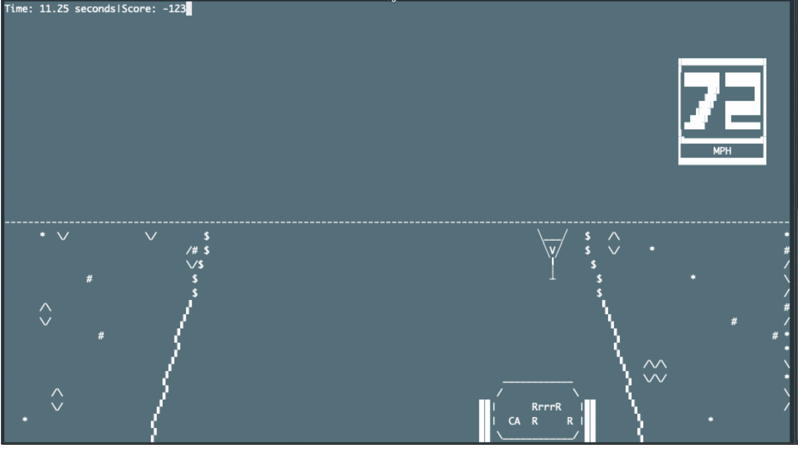
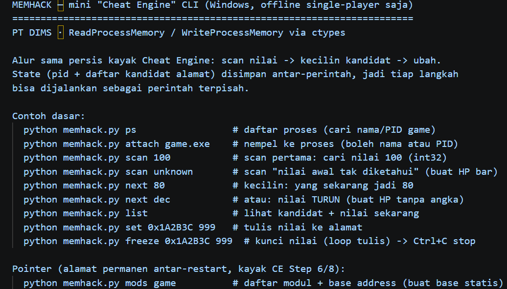
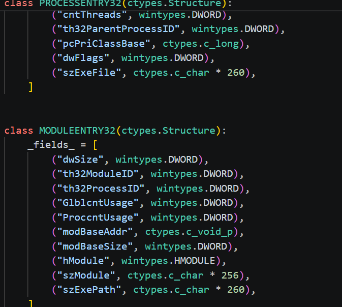

MemHack adalah alat bedah memori proses yang membaca dan menulis RAM game secara langsung lewat ctypes — memanggil ReadProcessMemory / WriteProcessMemory Win32 tanpa perantara. Alurnya persis Cheat Engine: scan sebuah nilai (misal health), ubah di dalam game, lalu scan ulang berkali-kali sampai ribuan kandidat menyusut jadi satu alamat. Bedanya, ia tak punya jendela, tombol, atau menu — hanya perintah teks.
Dan justru ketiadaan GUI itulah senjata rahasianya. Cheat Engine adalah alat manusia: ia butuh mata yang membaca daftar, tangan yang mengeklik Next Scan. MemHack dirancang agar otak yang mengemudikannya adalah AI — setiap langkah bedah memori diringkas jadi satu perintah CLI, sehingga Claude bisa menjalankannya sendiri: menyuruh scan, membaca hasil list, memutuskan next, lalu freeze — tanpa satu klik pun dari manusia. Inilah yang bikin ia terasa lebih OP dari Cheat Engine biasa: bukan alat yang kamu pakai, tapi alat yang dijalankan agen otomatis yang tak pernah lelah atau salah baca.
Ada alasan teknis kenapa harus begini. Cheat Engine yang berjalan sebagai Administrator justru memblokir otomasi lewat proteksi UIPI (User Interface Privilege Isolation) Windows — pesan mouse/keyboard sintetis dari proses ber-privilese lebih rendah ditolak, jadi AI tak bisa mengeklik GUI-nya. MemHack menembus tembok itu dengan menjadi CLI murni: tak ada UI untuk diproteksi, semua lewat stdin/stdout teks yang bebas dibaca dan ditulis Claude.
Kunci agar bisa dikemudikan per-perintah: MemHack menyimpan state antar-eksekusi. PID target dan seluruh daftar kandidat alamat disimpan ke disk, jadi tiap langkah bisa dijalankan sebagai perintah terpisah — attach game.exe, scan 100, next 80, list, set 0x1A2B3C 999 — persis pola yang bisa dirangkai sebuah agen. Untuk nilai yang tak diketahui angkanya (seperti bar HP tanpa angka), ada unknown-scan: scan unknown lalu persempit dengan next dec (nilai turun) / next inc setiap kali kondisi berubah.
Teknik kelas-berat pun ikut: rantai pointer agar alamat tetap ketemu walau game di-restart — mods mendaftar modul + base address statis, pscan mencari rantai pointer, presolve menyelesaikannya jadi alamat nyata, dan pfreeze mengunci lewat rantai itu (setara Cheat Engine langkah 6–8). Ditutup freeze yang mengunci nilai dalam loop tulis. Hasil akhirnya: sebuah pisau bedah memori yang cukup diberi tujuan — "bikin skor tak turun" — lalu Claude yang menuntaskan sisanya sendiri.



Dikemudikan Claude
Tiap langkah bedah memori jadi satu perintah teks — AI yang scan, memutuskan, dan mengunci sendiri, tanpa klik manusia.
Lolos UIPI
Sebagai CLI murni, menembus proteksi Windows yang memblokir otomasi terhadap GUI Cheat Engine ber-Admin.
State antar-perintah
PID + daftar kandidat disimpan ke disk, jadi tiap langkah bisa dirangkai sebuah agen sebagai perintah terpisah.
Unknown-scan
Cari nilai tanpa tahu angkanya (scan unknown → next dec/inc) — buat HP bar tanpa angka.
Rantai pointer
mods, pscan, presolve, dan pfreeze untuk alamat stabil antar-restart (setara CE langkah 6–8).
Freeze & set
Tulis langsung ke alamat dan kunci nilai dalam loop — HP / amunisi / skor tak berubah.